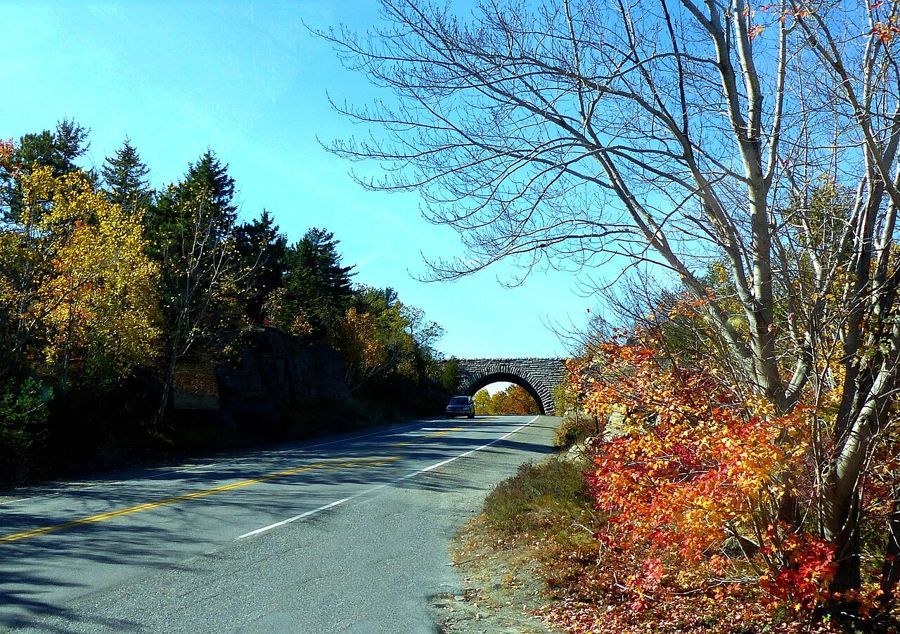
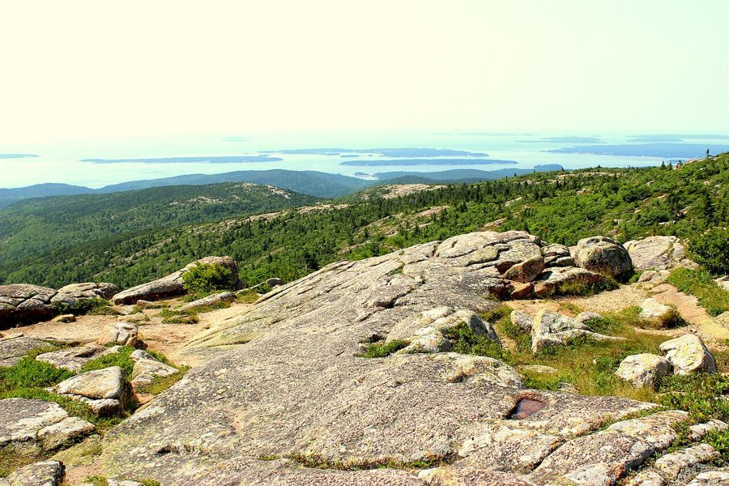

The route starts beside the Park Loop Road on the north side of Cadillac Mountain, close to sea level. The photo shows a stone bridge near the start.
Photo: Edgar El · CC BY 3.0 · Wikimedia Commons

You have reached the summit of Cadillac Mountain, 1,530 feet up, with views over Frenchman Bay.
Photo: Aaron Zhu · CC BY-SA 3.0 · Wikimedia Commons